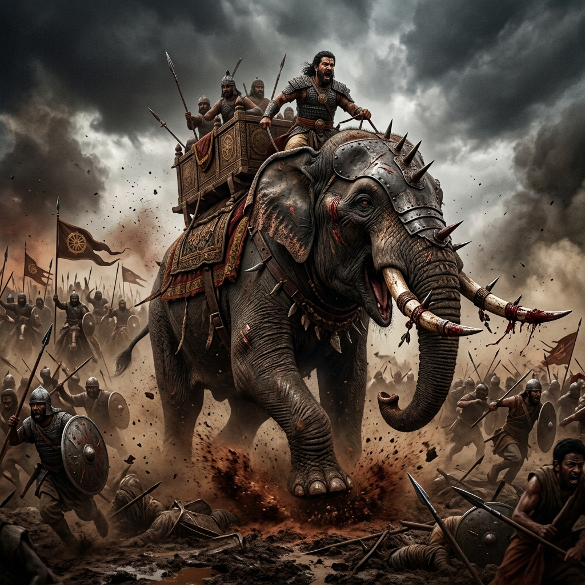
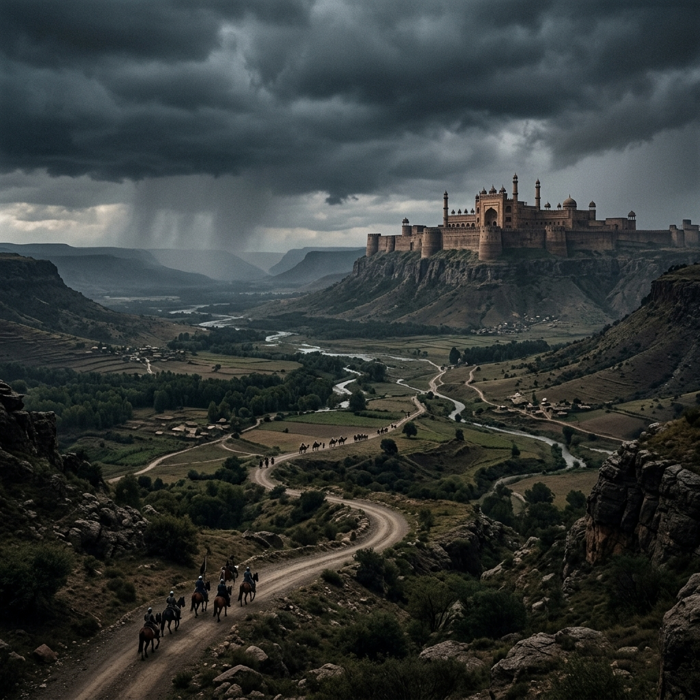

Empire Capability Radar Matrix

Militarily, the Mauryan Empire reigned supreme, dwarfing contemporary powers across the ancient world. Maintaining a staggering standing army—historically noted to include up to 600,000 infantry, 30,000 elite cavalrymen, and 9,000 terrifying war elephants—required an unprecedented fiscal engine.
- Chanakya's Arthashastra laid down meticulous rules for weapon production, fort maintenance, and spy mobilization, completely subsidized by the crown.
- Their tax net (up to 25% of crops plus heavy trade tolls) specifically targeted funding Kshatriya mobilization without crashing the economy.
- No other Indian empire mobilized such a centralized, deeply structured, and ruthlessly efficient military machine.
The Gupta Dynasty represented the undisputed Golden Age of economic prosperity, championing a system where minimal taxation directly nurtured maximum domestic wealth.
- Unlike the heavy Mauryan bureaucracy, the Guptas decentralized trade, allowing Shrenis (Merchant Guilds) astonishing autonomy to self-assess taxes.
- Tax rates were rigorously capped at exactly 1/6th of produce, preventing peasant revolt and ensuring immense excess capital remained with the citizens.
- This fiscal trust allowed the Indian GDP to skyrocket, manifesting in the massive minting operations of the Dinara—some of the purest, most beautifully artistic gold coins of classical antiquity.
Politically, the Cholas established incredibly sophisticated localized democratic frameworks, bypassing the traditional top-down absolutist taxation models of the North.
- The Uttaramerur inscription details astonishingly modern democratic elections where village assemblies (Sabhas) actively voted on budget, tax collection limits, and local infrastructure projects.
- They pioneered early cadastral land surveys—measuring soil viability, proximity to rivers, and crop output to ensure taxation was mathematically equitable.
- Their port authority administration managed highly complex maritime tariffs, enabling a seaborne empire stretching all the way to Southeast Asia (Srivijaya).

In terms of sheer contiguous landmass, the Mughal Empire (reaching its absolute zenith under Aurangzeb) was the most expansive, stretching over 4 million square kilometers.
- Managing this gargantuan territory was only possible through Raja Todar Mal's legendary Zabt (Dahsala) land mensuration protocol—the most advanced statistical agricultural system of the medieval era.
- Every province, from the lush plains of Bengal to the arid regions of Rajputana, was surveyed with standard bamboo jaribs (measuring rods) and taxed on a 10-year rolling crop cycle average.
- Despite the brilliance of its structure, the taxation rates climbed oppressively high (33% to 50%), which funded their massive empire but eventually destroyed peasant loyalty.